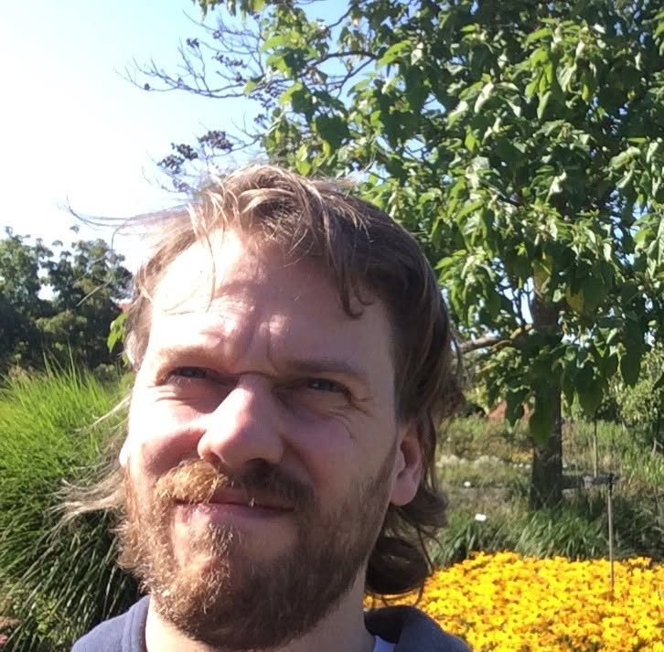

Massage &
Träning
För att kunna slappna av, röra sig utan smärta och må bra.
Boka din tid →
Magnus Gies Melin
Massageterapeut & Personlig Tränare
Med över tio års erfarenhet inom massage och personlig träning har jag hjälpt hundratals klienter att hitta balansen mellan prestation och återhämtning. Min filosofi är enkel: lyssna på kroppen, arbeta smart och bygg vanor som håller livet ut. Oavsett om du är elitidrottare eller nybörjare är du välkommen här.
Behandlingar & PT
Oavsett om du söker återhämtning, skadeförebyggande eller vill ta din träning till nästa nivå — här hittar du rätt behandling för dig.
Massage på jobbet?
Ett omtyckt sätt att få kollegor och anställda att må bra. Friskvårdsbidraget kan användas för massage och träning. Kontakta mig för att diskutera upplägg.
Svensk klassisk massage
Används för att behandla muskelspänningar, förbättra cirkulationen och skapa ökat välbefinnande.
Medicinsk massageterapi
Först har vi en diskussion om vilket problem du vill ha hjälp med och därefter gör vi eventuellt en rörelseanalys för att öka förståelsen och med den information föreslår jag en viss massagebehandling. Det som erbjuds är avslappningsmassage, deep tissue-massage, triggerpunktsbehandling men ofta en kombination av detta utefter dina önskemål. Jag lyssnar och försöker anpassa behandlingen efter dina behov vad det gäller tryck och hastighet.
Avslappningsmassage
En massage där du bara får vara, med eller utan musik. Ta med din egen musik om du vill.
Fibromassage
Fibromassage® är en speciellt anpassad, mycket mild, massagemetod som utvecklats för att hjälpa patienter med kronisk smärta, till exempel fibromyalgi (fibromassage.se). Det är en helkroppsmassage där även värmekudde och musik används för att slappna av.
Andningsmassage
Lotorpsmetoden är en mycket effektiv metod för att behandla andningsproblem. Metoden bygger på manuella behandlingsmetoder och för bland annat följande åkommor har den ett mycket gott resultat:
• Hosta
• Doft och parfymallergi
• Astmaliknande åkommor där astma inte konstaterats
Även personer med till exempel riktig astma och KOL har stor nytta av dessa behandlingar eftersom behandlingen lindrar symptomen.
En del i behandlingen är massage av diafragman och accessoriska andningsmuskler, en annan del är en guidning i att hitta rätt andningsmönster (lotorpsmetoden.se).
Fingerartrosmassage
För dig med fingerartros ger denna behandling en ökad cirkulation och dina fingrar känns rörligare och varmare. Behandlingen tar 20 minuter och upprepas förslagsvis veckovis. Gör gärna dina övningar från din fysioterapeut eller så kan vi hitta passande övningar.
Lymfmassage
Lymfmassage är en mild massage med konsekventa strykningar i lymfflödets riktning till lymfnoderna. Jag gör även några rörelser för att stimulera lymfflödet. Eftersom massagen och rörelserna är milda behöver en sällan fråga hur trycket är och patienten kan slappna av vilket hjälper lymfcirkulationen. Kolla i videon för rörelsetips för att stimulera lymfan.
Koppning
Koppningen skapar ett undertryck som kan lätta på spänningar i stela områden. Jag använder det utifrån mina anatomiska kunskaper och erfarenhet som medicinsk massageterapeut och finner det effektivt vid rätt tillfälle.
Personlig träning utomhus
Utifrån dina mål och rörelsetester så kan vi skräddarsy ett träningsprogram för dig. Kanske vill vi öka ditt rörelseomfång i vissa rörelser eller öka stabiliteten vid en rörelse. Om du har skador kan vi göra ett program för att rehabilitera dem. Jag kan ge träningsprogram med kroppsvikt, gummiband, kettlebells eller anpassat för ett utomhusgym nära dig.
Migrän & huvudvärk
Massage kan givetvis inte bota migrän, men kopplat till migrän finns ofta stela muskler i nacke och ansikte, där massage kan minska symtomen. Migrän uppstår ofta på grund av stela halsmuskler och ansiktsmuskler.
För dig med huvudvärk av spänningstyp, migrän så kan denna massage hjälpa dig att lindra symtomen. Har du kraftiga spänningar så kan det kännas intensivare dagen efter, innan det blir lättare. Massagen löser upp aktiva triggerpunkter som gör ont.
Undrar du över något?
För tillfället hyr jag in mig hos Kiropraktik & Rehab.